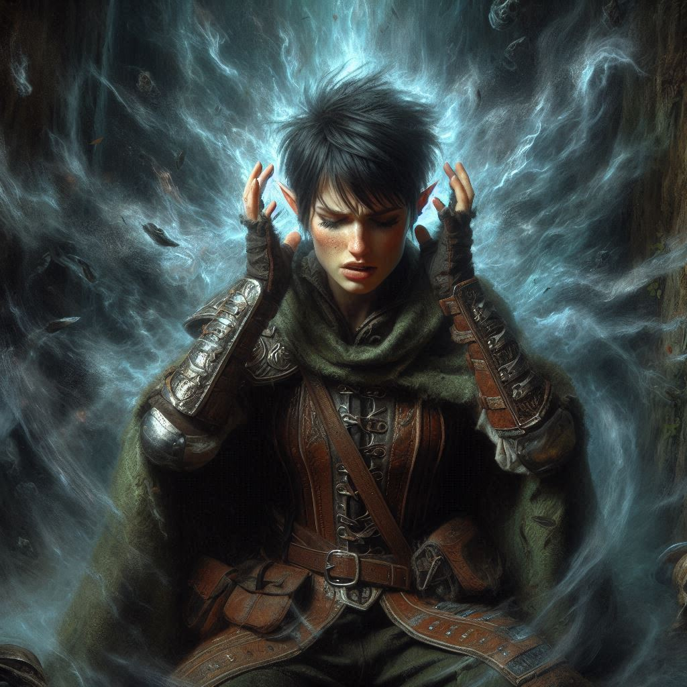
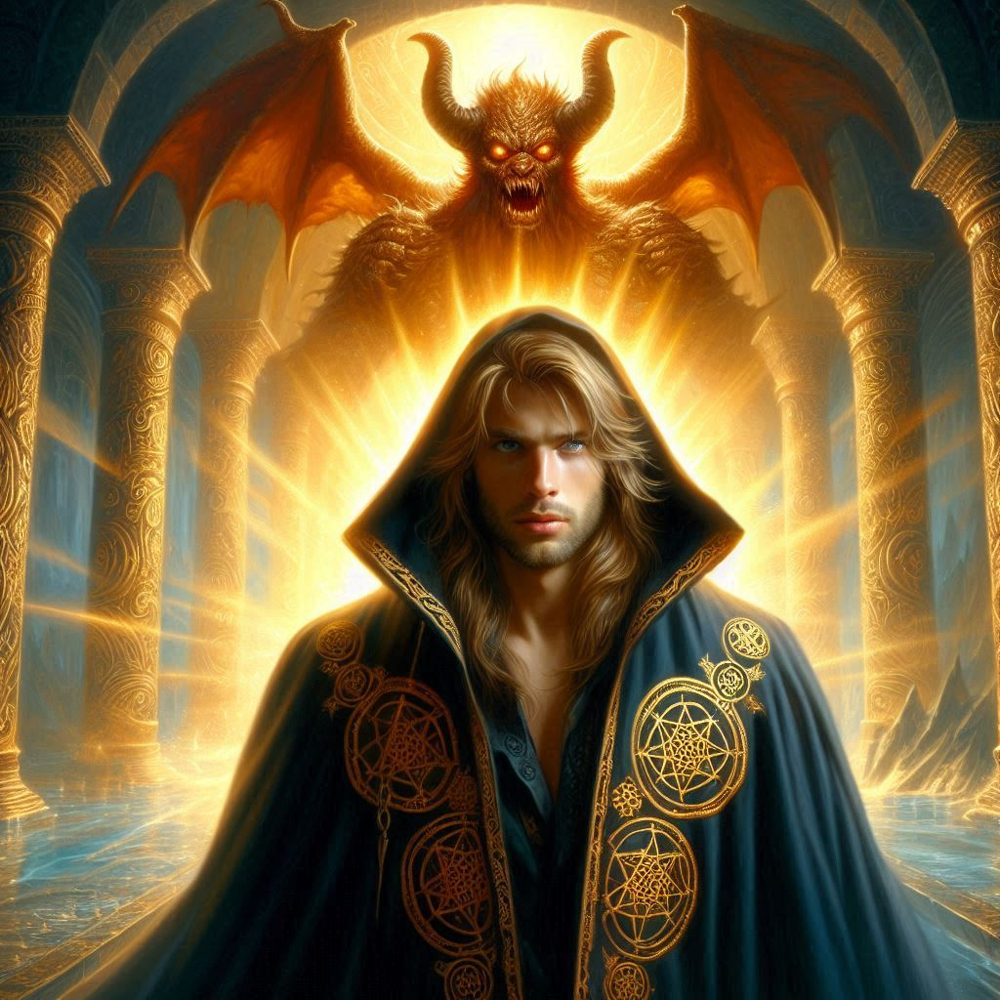

The Last Stand
You stand in the shadowed halls of Umbra’Thal, heart pounding, muscles tense. Jorsh is there, a figure of dark power cloaked in bitterness and lost love. His eyes, once kind, now gleam with a mixture of sadness and desperation. He just offered you a choice: join him, or let the kingdom fall. But your mind is already made up. You have no room for betrayal, not now, not ever.
Drawing in a breath, you harden your resolve. Jorsh cannot be trusted—not with his thirst for power and not with the lives of those who depend on you. Your heart aches, but you lift your bow, drawing an arrow from your quiver. "I'm taking you in, Jorsh," you say, voice firm, though each word cuts through your chest like a blade. "For your crimes against the Kingdom of Yew... for everything you’ve done."
Jorsh steps back, his expression wounded. “Kira, you don’t understand! Varis—he’s going to tear this world apart. I’m trying to stop him, but I need more power, I need—"
“Enough!” you shout, cutting him off. “You’ve said enough.” You launch the arrow, swift as a hawk, aiming straight for his chest. But Jorsh, with a flick of his hand, redirects the arrow with dark magic. Shadows swirl around him as he unleashes his power, sending a blast of energy that slams into you, knocking you back into the cold stone wall.
Your vision blurs as pain radiates through your body, but you push through it. You won't let Jorsh’s magic—or your old feelings—stop you now. Rising to your feet, you see the flicker of regret in his eyes, but it’s fleeting. You lunge forward, drawing your short sword, aiming to take him down once and for all.
Jorsh raises his hand to defend himself, but something changes in his posture. Instead of countering, he lets your blade graze his side. His blood, dark and unnatural, stains your weapon, and for a moment, the world freezes. "I never wanted this," he says, his voice barely a whisper. Then, in a flash of shadow, he vanishes from sight, fleeing deeper into the labyrinth of Umbra’Thal.
You don't have time to mourn. The kingdom is at stake, and Varis is still out there.
With your heart racing, you give chase, feet pounding through the dark corridors. Jorsh may have fled, but his insurrection isn't your only concern. Somewhere, Varis lurks—planning, plotting, preparing to summon the demon Yaldaboath. You cannot allow it.
Soon, you find yourself at the chamber of portals, a vast, foreboding room where the air hums with dark energy. Varis is there, tall and menacing, his dark elven features twisted with a sneer. He stands before the portal, chanting in a language you don’t understand, hands raised to the swirling vortex of darkness.
“You’re too late, Kira,” he says without turning to face you. “Yaldaboath is coming, and this world will be mine.”
“Not if I stop you first,” you growl, charging at him. Varis laughs—a cold, hollow sound—and with a flick of his wrist, tendrils of dark magic lash out, wrapping around you like iron chains. Pain sears through your body, burning like fire, and you drop to your knees.
“You think you can challenge me?” Varis snarls, tightening the magical grip around you. “You’re nothing. A pawn in a game you can’t comprehend.”
The pain intensifies, and you gasp for breath. The darkness closes in around you, suffocating, but you refuse to give up. You promised yourself you'd bring justice. You promised you'd protect the kingdom. And no matter what it takes, you’ll keep that promise.
Just when you think the darkness will consume you, the portal behind Varis erupts with a deafening roar. Yaldaboath, the demon lord of the Shadow Realm, emerges—massive and grotesque, its form dripping with shadows and malice. Varis turns, his expression triumphant as he gestures toward you, offering you up as a sacrifice.
“Yaldaboath!” Varis calls out. “Here is the vessel—take her, and grant me your power!”
But before Yaldaboath can claim you, a familiar figure steps out from the shadows. Jorsh. He is bleeding, his face pale, but his eyes burn with determination. With a powerful incantation, Jorsh summons all the dark magic at his disposal and sends it hurtling toward Varis.
Varis spins, shock and betrayal flashing across his face as the magic strikes him squarely in the chest. His body convulses, and the grip of his dark magic around you shatters. You fall to the ground, gasping for air, watching as Varis stumbles, collapsing before the portal.
Jorsh approaches slowly, his breathing labored. “I won’t let him destroy this world... not even if it means destroying myself.”
You realize what he’s about to do. “Jorsh... no!” you cry, staggering to your feet. But it’s too late. He steps forward, facing Yaldaboath, and with one final incantation, he sacrifices himself. A blinding light bursts from his body, merging with the dark magic, sealing the demon back into the portal. Yaldaboath lets out a furious roar as it’s dragged back into the shadows, the portal closing behind it forever.
When the light fades, Jorsh is gone. The room is silent, save for the distant echo of collapsing magic.
You collapse to your knees, exhausted and heartbroken. But it’s over. Varis is dead, the portal is sealed, and Yew is safe. You glance toward the chamber’s entrance, where Onyx appears, his expression solemn. He walks toward you slowly, his eyes filled with sorrow.
“Kira,” he says softly, placing a hand on your shoulder. “It’s time to go home.”
And with that, you rise, leaving behind the echoes of what could have been, and stepping into a future shaped by your choices.